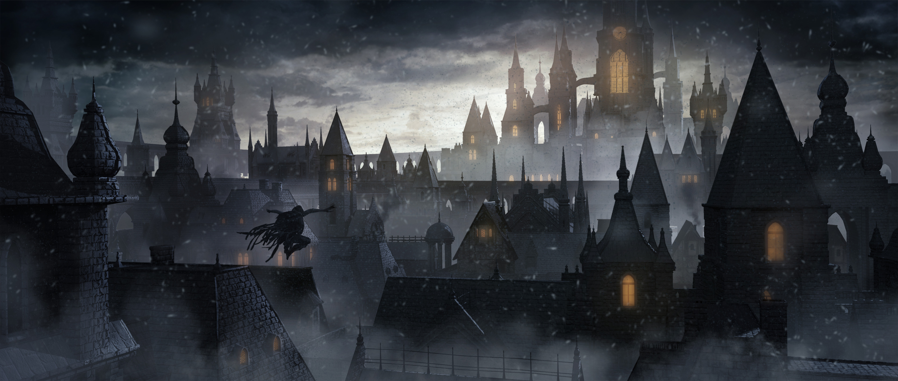
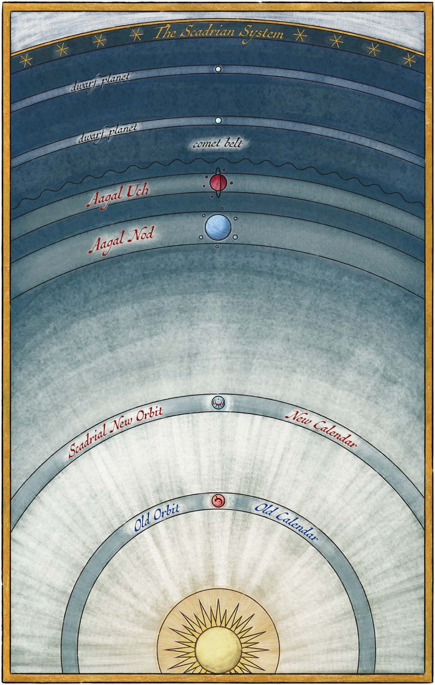
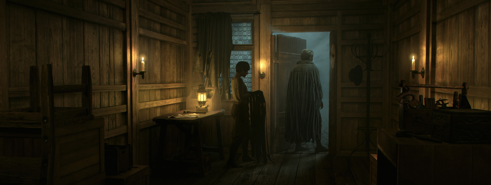
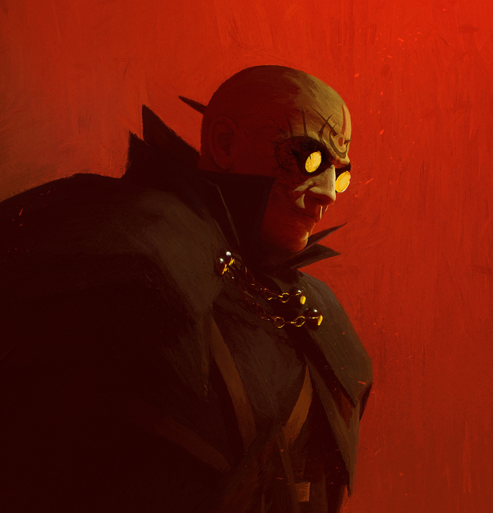

SCADRIAL
A world of ruin and ash. Ash falls down from the sky, and the mist rules the night.
The planet is harsh, hot, and dangerous, yet cities still stand. All under the rule of the Lord Ruler, a god-like figure who controls and manipulates their people.

SCADRIAN SYSTEM
The Scadrian system is the name given to the planetary system containing the planet of Scadrial. In addition to Scadrial, the system includes two gas giants, two dwarf planets, and a comet belt.
The system hosts five different planets: Scadrial, Aagal Nod, Aagal Uch, and two unnamed dwarf planets which lay outside of the system's comet belt.


INHABITANTS
Scadrial is home to many different types of people. During the Lord Ruler's reign, society was divided between two classes: the nobility, descendants of the people who supported the Lord Ruler in his quest to ascension, and the skaa, a vast, oppressed people, forced into labor and poverty.
Later down the line, in Scadrial's distant future, technological advancements and a new ruler showed a huge change. New classes emerged, such as urban workers and lawkeepers. And while some aspects of the Lord Ruler's rule still linger, Scadrial’s people continue to evolve.
METAL ARTS
Scadrial has a unique system of magic connected to metal expressed through three different, connected systems of magic known as the Metal Arts: Allomancy, Feruchemy, and Hemalurgy. Each of these systems relies on different methods of using metals to access magical effects.
Allomancy is the most well-known and most commonly used Metal Art. It involves ingesting and “burning” specific metals to produce different types of magical effects. Feruchemy is practiced almost exclusively by the Terris people, and it involves storing physical or mental attributes like strength, health, or memories in metal objects called metalminds. Hemalurgy is a more mysterious art, allowing power to be stolen from one person and given to another by spiking a person with metal.
